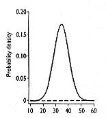
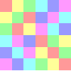

|  | Visualizing group theory!? explains what Group Explorer is all about, why it was created, and what it accomplishes. |
|  | Introduction to multiplication tables shows you how a common introductory device can be expanded to have advanced potential. |
 |
Introduction to Cayley diagrams shows off the most potent visualization device in Group Explorer. |